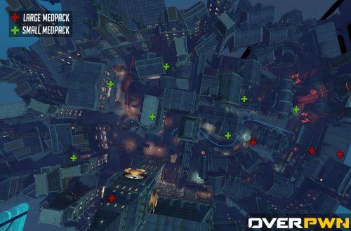
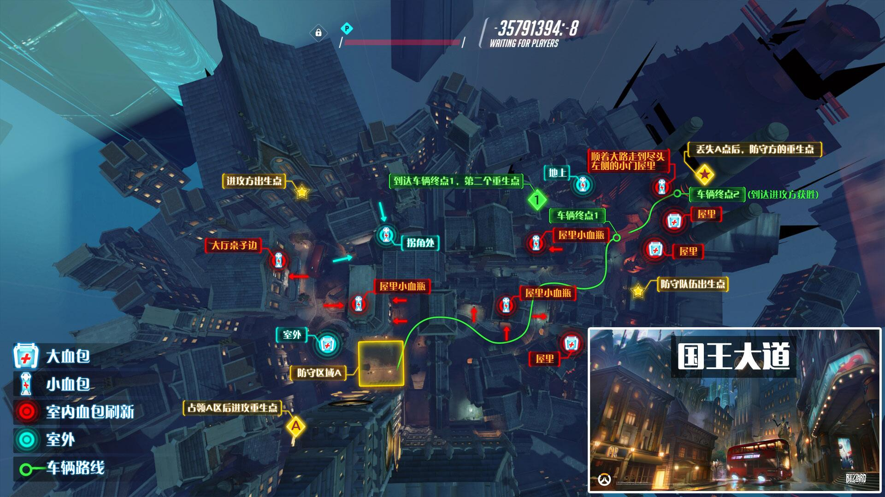
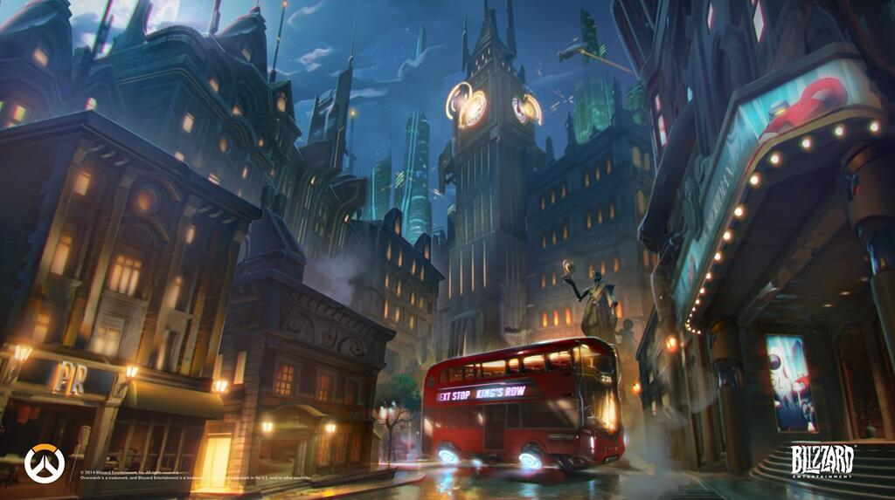

“国王大道”这是在2014暴雪嘉年华上公布的一张地图，由智能机器人建设，但英国政府拒绝承认他们的权利，导致局势紧张。 经典的双层巴士与大本钟预示着一场激烈的战斗将在英国伦敦展开，《守望先锋》中的超级英雄会在这宁静的街道中追对厮杀而赢得比赛的胜利。
地图渊源：国王街是英格兰剑桥中心的一条历史街道，北接三一街（Trinity Street）及圣约翰街，南接特兰平顿街。这是剑桥主要的旅游区，剑桥大学的中心位置。（来自维基百科）
进攻方成功夺取A点时，随即出现一辆可以向前推的运输车，进攻方护送车辆到达目B点（目标点1）后，比赛时间会刷新,此时防守方重生点不变。当进攻方护送车辆到达C点（目标点2）后便获得胜利，同样的，防守方如能坚持防守C点（目标点2）到比赛时间结束，防守方便获得胜利
“国王大道”这张图是典型的占点、推车图。在A点处占点，之后一路推车至C点（目标点2）中途经过B点（目标点1）。 进攻方出生在A点外的双层巴士前的教堂内，防守方则出生在B点（目标点1）点旁边的房间内。
如上图所示，进攻方可以选择三条路线进攻。其中线路1和线路2必须先穿过图中央橙色标注的门口。而线路3则是直接走进A6点所在的房屋内，然后在二楼的阳台跳下去，途径A2、A1点最终可到达A3点附近的二楼，这样便可以绕路直接到达A点周围的任何一栋建筑物的二楼，作用是骚扰防守方侧翼与后翼，配合从图中央门口突进的队友。线路1是从左翼绕路攻击A点，而线路2则是直接从正面突进到A点，也是最容易被集火的一条路，推荐肉盾型英雄走此路。 推荐的防守点：A1、A2、A3狙击型英雄可以选择这些点。 推荐的防守建筑：A4、A5、A6埋伏在建筑物里面，伏击过路的进攻方英雄。